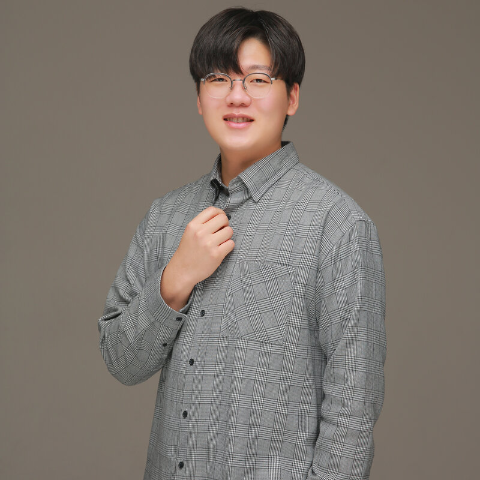
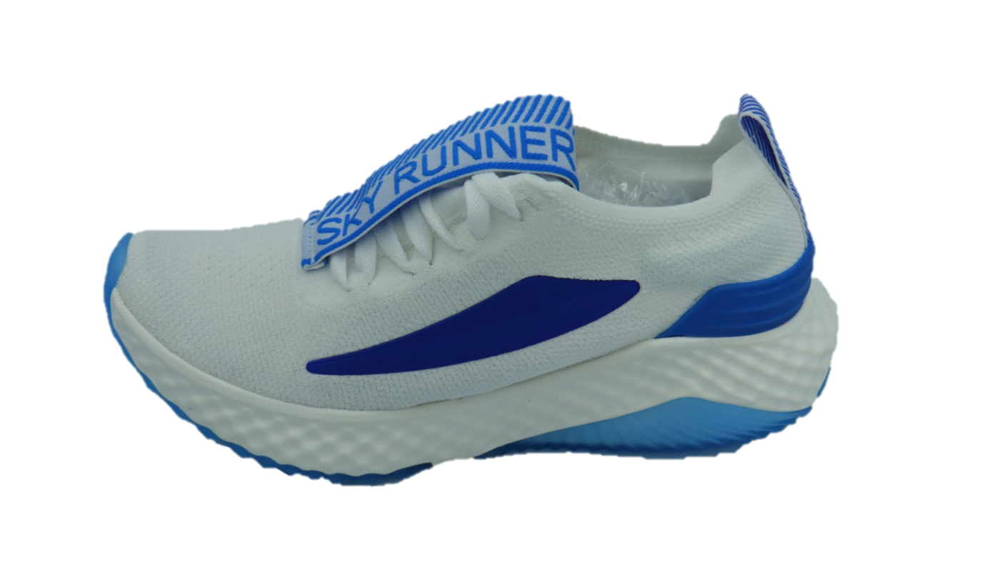
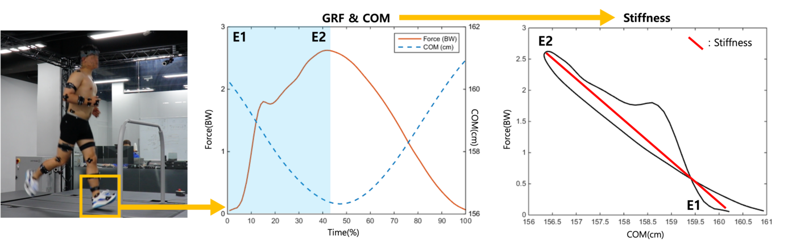
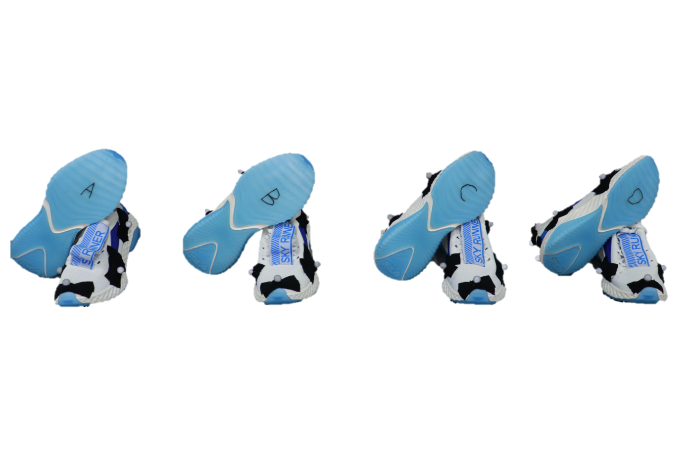
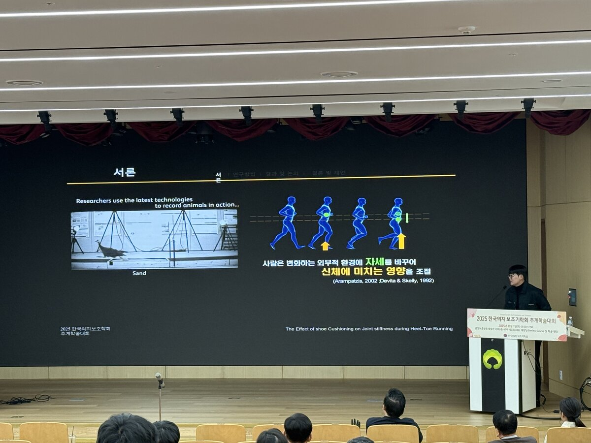
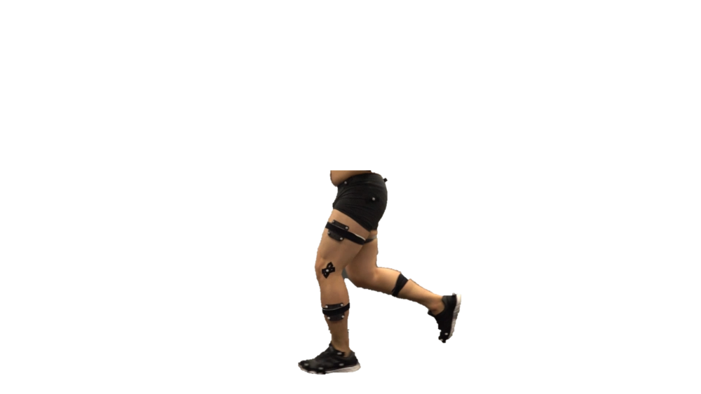
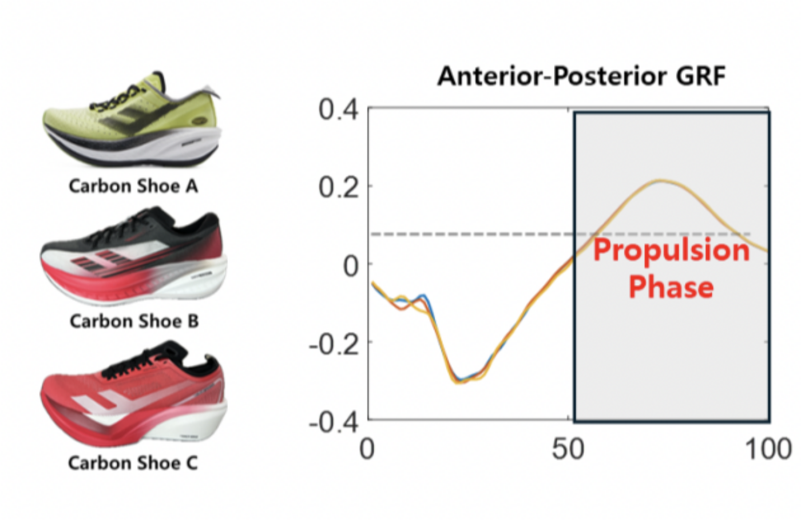
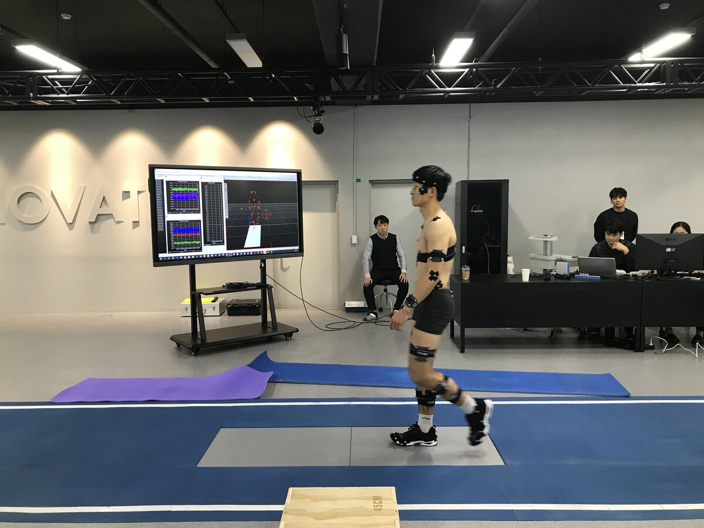
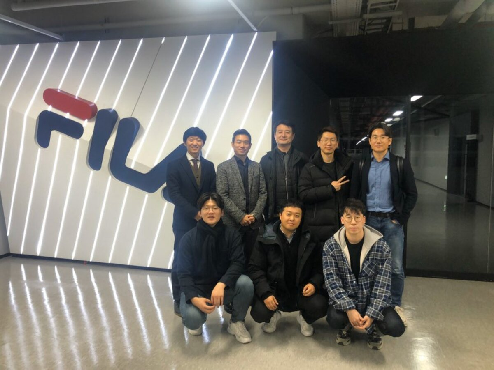
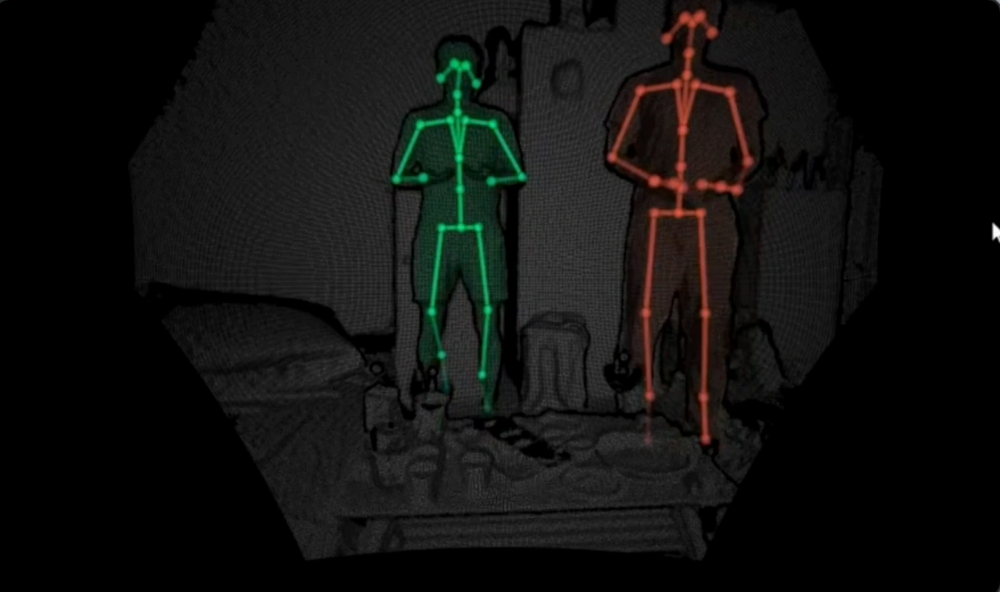

Hyeong-Sik Kim, M.S. — bridging quantitative and qualitative movement assessment to make healthy movement accessible to everyone.

Hyeong-Sik Kim holds an M.S. in Biomechanics from Korea National Sport University, where his research focused on how the body adjusts joint stiffness in response to footwear and surface changes during running.
He currently works at the Motion Innovation Center, KNSU, with research interests spanning biomechanics, injury prevention, footwear performance, and AI-assisted movement analysis.
Outside the lab, he competes and officiates in Taekwondo Poomsae, and is drawn to patterns in human performance — from dance to martial arts — along with travel experience across more than 10 countries.
Bridging the gap between quantitative and qualitative movement assessment to make healthy movement accessible to everyone.
Humans change their posture in response to changing external environments to adjust the effects on the body.

Softer midsoles increased ankle stiffness and contact displacement while leaving overall vertical stiffness unchanged — suggesting the body redistributes joint-level strategy to maintain general stability during recreational running. (Kulmala et al., 2018; Liu, Wu & Lam, 2017)








What kinematic and kinetic differences exist between two players performing the same motion?
Do differences in joint strategies contribute to greater force production?
Which biomechanical variables can be used to quantify these differences?